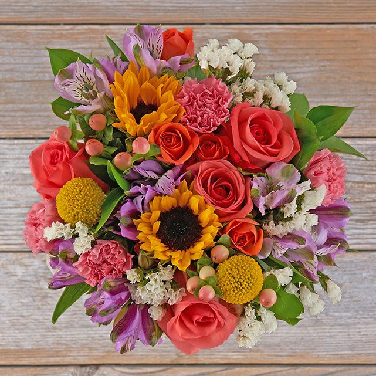
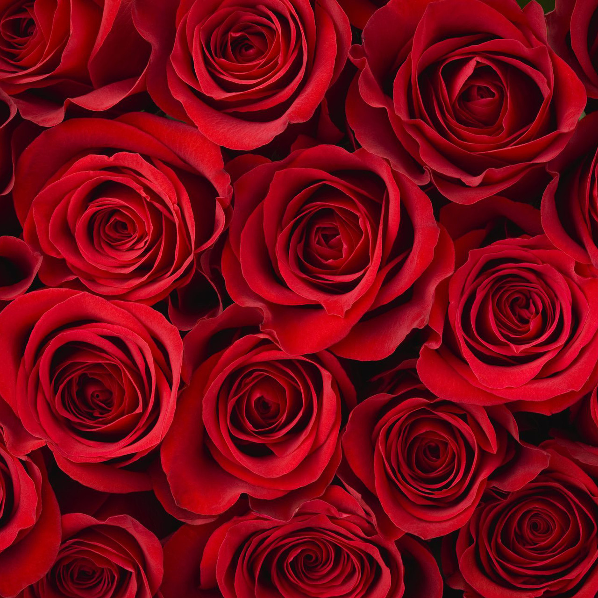
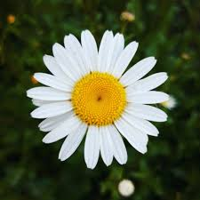
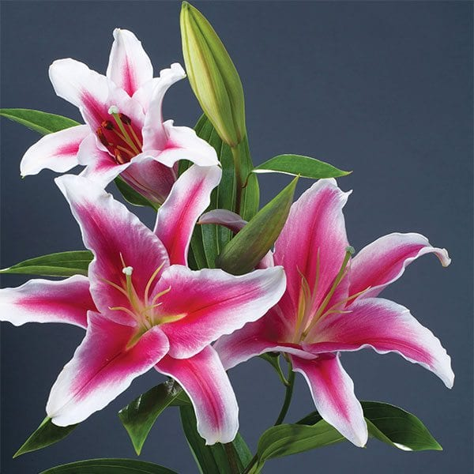
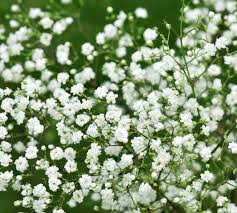
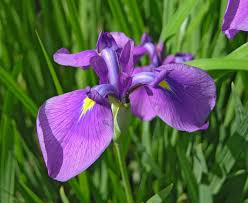
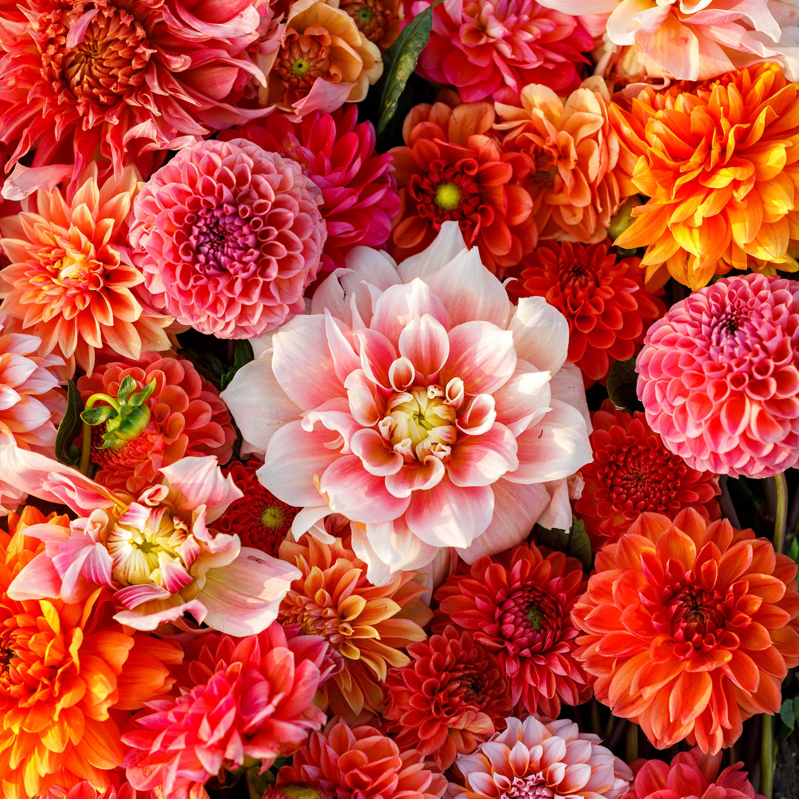
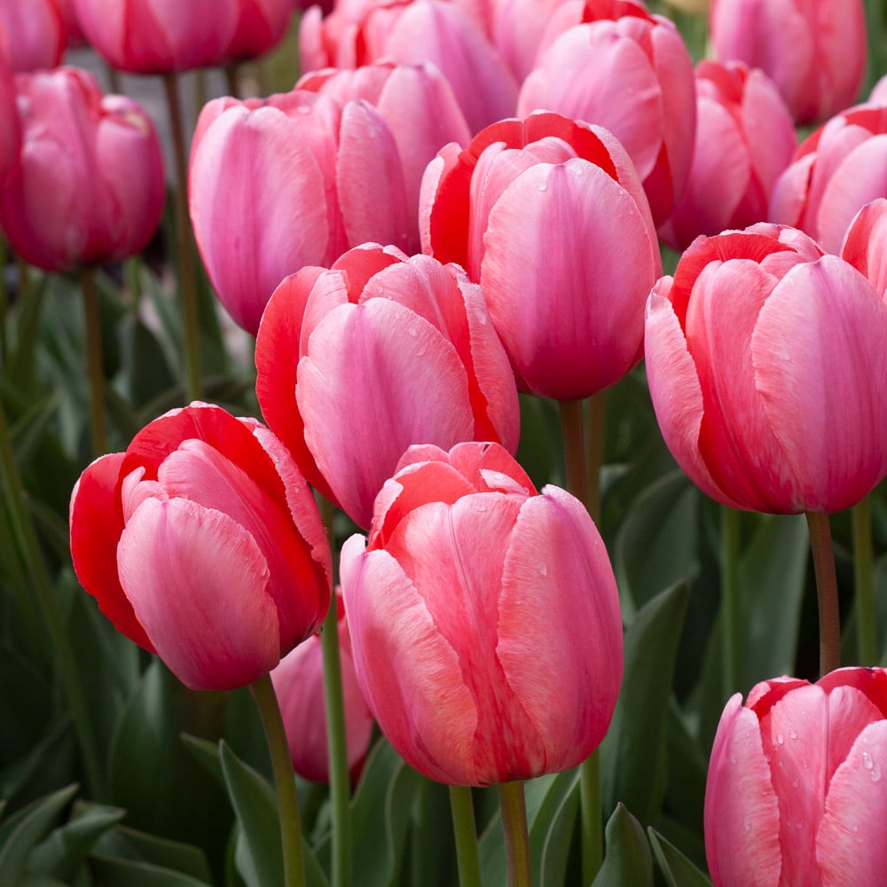

No other flower is as symbolic of love than the rose. In Greek mythology, the rose was beloved and considered sacred by Aphrodite, the goddess of love. That connection with romantic love was paralleled in Roman mythology, associated with Aphrodite’s counterpart, Venus.

The meaning of a daisy flower can be purity, innocence, new beginnings, joy and cheerfulness. You could give someone a posy of daisies, and in the language of flowers, this could be taken to mean their secret was safe with you.

The pretty pink lily is beautiful for showing how much you admire someone or are infatuated with them. Gift these on the first date! They're also perfect for showing love in a non-romantic way.

Buying the baby's breath flower often represents sincerity, purity, and love in many forms. It also sometimes symbolizes innocence, making it an excellent gift for baby showers and many other occasions.When given as a gift, they are given as one of thoughtfulness and love. They are often given to someone who is sick or experiencing a loss. They also give a meaning of being needed or wanted.

The iris flower symbolises faith, courage, valour, hope and wisdom. However, the colours of iris flowers have a range of different meanings, and choosing the right colour can determine how your flower is received.

Dahlias are a unique and showy bloom, so it’s fitting that also they symbolise standing out from the crowd and following your own path. They’re an excellent flower to give a friend or family member who’s graduating or about to embark on a new career journey.

Tulips generally symbolize deep, perfect love, rebirth, and charity. As one of the first flowers to bloom in spring, they represent new beginnings and, due to a Persian legend, are also tied to enduring, passionate love.